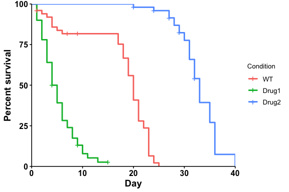
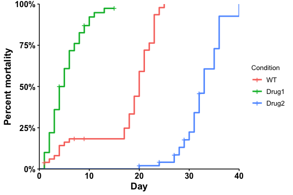
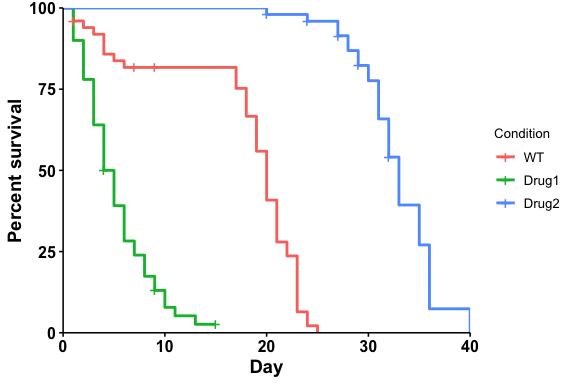
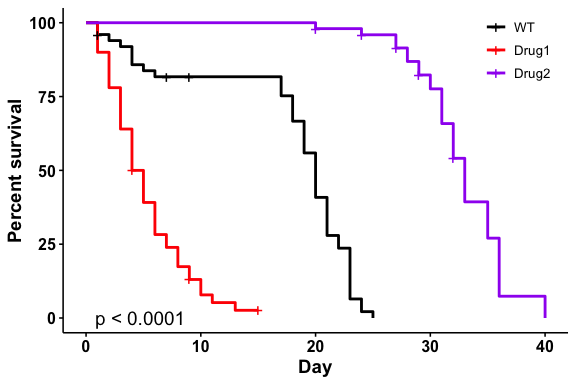
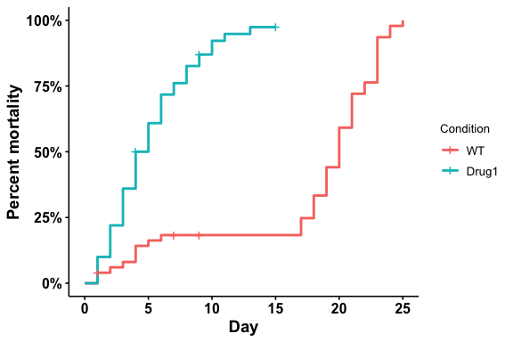

Theggbulksurv package provides functions to facilitate bulk survival analysis, allowing users to input multiple observations per row.
What is bulk survival analysis?
For some model organisms (eg C. elegans and D. melanogaster), lifespan studies are usually performed in bulk. In bulk survival analysis, researchers place a certain number of organisms in a vial, and count the number of organisms that are dead/censored on any particular day. This produces a table that looks like this, with multiple observations per row:
| condition | day | dead | censored |
|---|---|---|---|
| WT | 10 | 2 | 0 |
| WT | 12 | 0 | 2 |
…
Unsurprisingly, survival analysis packages in R (eg survival, survminer) require each row to correspond to one individual. Wrangling the data manually is often a rather tedious task.
What does this package do?
ggbulksurv converts bulk survival data into individual observations per row, and plots a survival curve. Other functions are also available to plot mortality curves, customize colors, and to calculate relevant statistics such as median survival and log-rank tests.
ggbulksurv is very much under active development, and any feedback and contribution are welcome through the Issues page.
What is R, and how do I get started?
Download the most recent versions of R and RStudio for the appropriate OS using the links below:
If you’re new to R, I highly recommend this great resource by the Harvard Chan Bioinformatics Core. It provides a great overview of the RStudio interface, as well as R Projects that help keep your analysis organized.
https://hbctraining.github.io/Intro-to-R-flipped/lessons/01_introR-R-and-RStudio.html
Do I need this package?
If you are conducting lifespan studies with C.elegans and D.melanogaster - probably.
Installation
Install the following dependencies from CRAN. If you use the tidyverse, these should already exist:
install.packages(c("dplyr", "ggplot2", "janitor", "magrittr", "methods", "scales", "tidyr"))Install two other dependencies from Bioconductor:
if (!require("BiocManager", quietly = TRUE))
install.packages("BiocManager")
BiocManager::install(c("survival", "survminer"))You can install the development version of ggbulksurv from GitHub with:
if (!require("devtools", quietly = TRUE))
install.packages("devtools")
devtools::install_github("qhuitan/ggbulksurv")Getting started (quick)
1. Read in your data with read.csv().
Your data file should be a csv with 4 columns: condition, day, dead, censored. Additional columns will be removed from the analysis.
library(ggbulksurv)
library(survival)
library(survminer)
#> Loading required package: ggplot2
#> Loading required package: ggpubr
#>
#> Attaching package: 'survminer'
#> The following object is masked from 'package:survival':
#>
#> myelomaRead in your .csv file with the following line of code:
dat <- read.csv("your-csv-file.csv")For the purposes of this tutorial, I’ve created a ficitonal sample dataset, sample_data that we will use to illustrate the functions in this package.
2. Run the survival analysis:
ggbulksurv can be run with the default settings using the run_bulksurv() command.
Plotting a survival curve:
# Plot a survival curve
p <- run_bulksurv(dat,
sample_order = c("WT", "Drug1", "Drug2"),
type = "survival")
#> $median_survival
#> Call: survfit(formula = Surv(day, status) ~ condition, data = df_isurv)
#>
#> n events median 0.95LCL 0.95UCL
#> condition=WT 50 47 20.0 19 21
#> condition=Drug1 50 46 4.5 4 6
#> condition=Drug2 50 42 33.0 32 35
#>
#> $logrank
#> Call:
#> survival::survdiff(formula = Surv(day, status) ~ condition, data = df_isurv)
#>
#> N Observed Expected (O-E)^2/E (O-E)^2/V
#> condition=WT 50 47 31.2 7.94 12.9
#> condition=Drug1 50 46 12.5 89.99 128.1
#> condition=Drug2 50 42 91.3 26.60 123.3
#>
#> Chisq= 186 on 2 degrees of freedom, p= <2e-16
#>
#> $pairwise
#>
#> Pairwise comparisons using Log-Rank test
#>
#> data: df_isurv and condition
#>
#> WT Drug1
#> Drug1 2.3e-14 -
#> Drug2 < 2e-16 < 2e-16
#>
#> P value adjustment method: BH
Plotting a mortality curve:
# Plot a mortality curve
p <- run_bulksurv(dat,
sample_order = c("WT", "Drug1", "Drug2"),
type = "mortality",
print_stats = FALSE # don't print stats
)
#> Scale for y is already present.
#> Adding another scale for y, which will replace the existing scale.
Further customizations
Changing the p-adjust method
If needed, we can change the p.adjust method. run_bulksurv() accepts the following corrections: “holm”, “hochberg”, “hommel”, “bonferroni”, “BH”, “BY”, “fdr”, “none”. Default: “BH”
p <- run_bulksurv(dat,
sample_order = c("WT", "Drug1", "Drug2"),
type = "survival",
p_adjust_method = "bonferroni" # use bonferroni correction
)
#> $median_survival
#> Call: survfit(formula = Surv(day, status) ~ condition, data = df_isurv)
#>
#> n events median 0.95LCL 0.95UCL
#> condition=WT 50 47 20.0 19 21
#> condition=Drug1 50 46 4.5 4 6
#> condition=Drug2 50 42 33.0 32 35
#>
#> $logrank
#> Call:
#> survival::survdiff(formula = Surv(day, status) ~ condition, data = df_isurv)
#>
#> N Observed Expected (O-E)^2/E (O-E)^2/V
#> condition=WT 50 47 31.2 7.94 12.9
#> condition=Drug1 50 46 12.5 89.99 128.1
#> condition=Drug2 50 42 91.3 26.60 123.3
#>
#> Chisq= 186 on 2 degrees of freedom, p= <2e-16
#>
#> $pairwise
#>
#> Pairwise comparisons using Log-Rank test
#>
#> data: df_isurv and condition
#>
#> WT Drug1
#> Drug1 6.9e-14 -
#> Drug2 < 2e-16 < 2e-16
#>
#> P value adjustment method: bonferroni
Changing colors
p <- run_bulksurv(dat,
sample_order = c("WT", "Drug1", "Drug2"),
print_stats = FALSE, # don't print stats
palette = c("black", "red", "purple"), # Custom colors
legend.title = "", # Remove legend title
legend.position = c(0.9, 0.9), # Position legend at top right
add.pval = TRUE # Add pvalue
)
Subsetting data
What if you’re only interested in two conditions (eg WT vs Drug1)?
# Specify your conditions of itnerest here
conditions_of_interest <- c("WT", "Drug1")
dat_filt <- dat %>%
# Keep rows where condition is in conditions_of_interest
dplyr::filter(condition %in% conditions_of_interest)
# Plot
p_filt <- run_bulksurv(dat_filt,
sample_order = c("WT", "Drug1"),
type = "mortality",
print_stats = FALSE # don't print stats
)
#> Scale for y is already present.
#> Adding another scale for y, which will replace the existing scale.
Other functionalities
Interfacing with PRISM
GraphPad PRISM remains a favourite among biologists. To allow bulk survival data to be quickly converted to a PRISM-compatible format, use the pivot_prism function:
df_prism <- pivot_prism(dat,
sample_order = c("WT", "Drug1", "Drug2"))
head(df_prism) # A quick look
#> # A tibble: 6 × 4
#> # Groups: day [1]
#> day WT Drug1 Drug2
#> <int> <dbl> <dbl> <dbl>
#> 1 1 0 NA NA
#> 2 1 1 NA NA
#> 3 1 1 NA NA
#> 4 1 1 1 NA
#> 5 1 1 1 NA
#> 6 1 1 1 NA
# Export to csv
write.csv(df_prism, file = "lifespan_prism.csv")
sessionInfo()
#> R version 4.2.2 (2022-10-31)
#> Platform: aarch64-apple-darwin20 (64-bit)
#> Running under: macOS Ventura 13.1
#>
#> Matrix products: default
#> BLAS: /Library/Frameworks/R.framework/Versions/4.2-arm64/Resources/lib/libRblas.0.dylib
#> LAPACK: /Library/Frameworks/R.framework/Versions/4.2-arm64/Resources/lib/libRlapack.dylib
#>
#> locale:
#> [1] en_US.UTF-8/en_US.UTF-8/en_US.UTF-8/C/en_US.UTF-8/en_US.UTF-8
#>
#> attached base packages:
#> [1] stats graphics grDevices utils datasets methods base
#>
#> other attached packages:
#> [1] survminer_0.4.9 ggpubr_0.6.0 ggplot2_3.4.2
#> [4] survival_3.5-5 ggbulksurv_0.0.0.9000
#>
#> loaded via a namespace (and not attached):
#> [1] zoo_1.8-11 tidyselect_1.2.0 xfun_0.37 janitor_2.2.0
#> [5] purrr_1.0.1 splines_4.2.2 lattice_0.20-45 carData_3.0-5
#> [9] snakecase_0.11.0 colorspace_2.1-0 vctrs_0.6.3 generics_0.1.3
#> [13] htmltools_0.5.4 yaml_2.3.7 utf8_1.2.3 survMisc_0.5.6
#> [17] rlang_1.1.1 pillar_1.9.0 withr_2.5.0 glue_1.6.2
#> [21] lifecycle_1.0.3 stringr_1.5.0 munsell_0.5.0 ggsignif_0.6.4
#> [25] gtable_0.3.3 evaluate_0.20 labeling_0.4.2 knitr_1.42
#> [29] fastmap_1.1.1 fansi_1.0.4 highr_0.10 broom_1.0.3
#> [33] xtable_1.8-4 scales_1.2.1 backports_1.4.1 abind_1.4-5
#> [37] farver_2.1.1 km.ci_0.5-6 gridExtra_2.3 digest_0.6.33
#> [41] stringi_1.7.12 rstatix_0.7.2 dplyr_1.1.3 KMsurv_0.1-5
#> [45] grid_4.2.2 cli_3.6.1 tools_4.2.2 magrittr_2.0.3
#> [49] tibble_3.2.1 tidyr_1.3.0 car_3.1-1 pkgconfig_2.0.3
#> [53] Matrix_1.5-4.1 data.table_1.14.8 timechange_0.2.0 lubridate_1.9.1
#> [57] rmarkdown_2.20 rstudioapi_0.14 R6_2.5.1 compiler_4.2.2